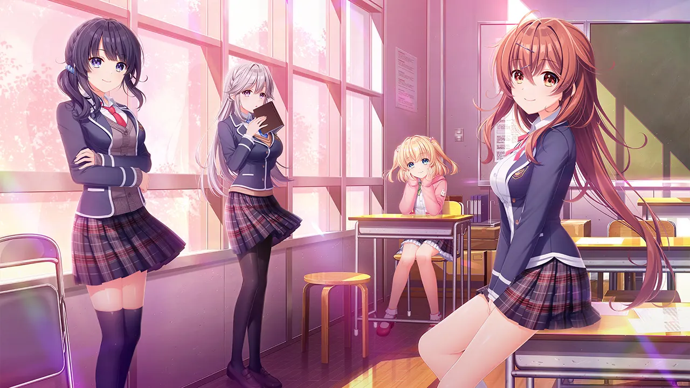
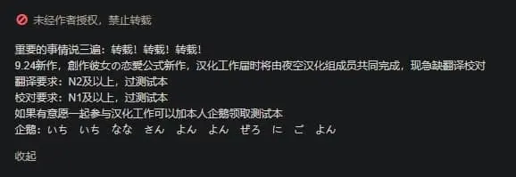

創作女友的戀愛方程式：和不尋常的 JK 談戀愛也能套公式？
作者：桐羽（簡稱桐遠暮羽）
At A Glance
普通的 JK 普通地魅力四射，但是魅力能射殺人的 才華橫溢創作 JK 找上你，要和你 譜寫創作、戀情和青春的樂章。

| 資訊一覽 | |
|---|---|
| 開發商 | 🔗️AinoLinks |
| 原畫 | 有葉 (🔗️Twitter) |
| 攻略人數 | 4 |
| 遊戲時長 | 27h（計時） |
| 類型 | 校園 搞笑 純愛 |
| 難度 | 低（直接選人） |
| 分級 | R-18（性行爲） |
這是該遊戲公司的第一部出道作品。
故事
陷入了困境，再也寫不出小說了的高中生小說家
鏡 寿季（簡稱小壽）爲了找到脫離困境的方法，
搬到了表姐家的小鎮上，準備入學 才華學園。
私立才華學園，是一所爲了培養創作者而生的學校，
爲想成爲 小說家、插畫師、聲優的學生 提供專業的培養。
這就是一所二次元高中，從裏面畢業的學生
將來都會去進軍 輕小說，Galgame 劇本、漫畫和聲優 等，
總之味兒可強了。。
然後，在開學之前，
小壽在小鎮上偶遇了自己的青梅竹馬，
也就是那個從小一起長大，一起寫小說，
發誓要永遠在一起，
卻又不知爲何 三年間一直音信不通的 充滿謎團的甜心女孩。
也要入學才華學園的她，
將要和學校裏那些奇妙深刻的女孩子們一起，
把男主角徹底捲進 強制譜寫創作青春樂章 的無厘頭日常之中。
登場人物
JK 鑑賞
前方魔鬼排版，，，
桐羽注：
請問，如果你要對陪伴多年的甜心女孩進行一個穿刺，你會懷著怎樣的心情？
我和青梅竹馬關係非常疏遠，所以希望有相關經驗的朋友講給我聽，好奇
你
其他人物
點此展開
遊戲 OP
H 場景
點此展開（R-18 內容）
CG 鑑賞
剛才還沒看夠？？那我再放一張。
這遊戲好！好就好在：

推薦理由
一眼看過去，覺得這個畫風有點違和，不太習慣？
但是玩了一會兒習慣了以後，才會體會到它的精妙之處喔！
你看，她們的眼睛就像寶石一樣閃閃發亮，
多樣的面部細微表情，
無論是歡樂😆、驚訝😲、羞恥😳，
還是嘲諷🙄、戲謔😏、鄙視😒（還有😅），
還有流暢應景的肢體動作，都非常傳神，非常可愛！
而且，本作製作組還給每一位女主角
準備了 7 套衣服（甚至更多），
隨着季節、環境的變化，她們還能散發出不同的魅力！
創作女友不是拔作，王道校園生活的共通線
有 8 章，之後才是真正談戀愛的個人線。
和其他循序漸進刷好感度，再戀愛的 Gal 不同，
劇中一上來就發生各種狂暴意外把男主和女主們捲入戀愛漩渦之中，
各女主的感情線拉🉐️️超級長，Flag 直接插爆，
然後各種無厘頭事件把就像把男主的生活綁上過山車，
處處體現了製作組絞盡腦汁想要搞笑的小心思。
你問我爲甚麼知道？因爲我玩的時候繃爆！繃爆！！真繃不住啦！！！
就如劇中所述，生活中充滿了煩惱的玩家們，
會更偏愛輕鬆愉快的作品。
而本作就是一劑優秀的幽默猛藥。
在猶豫是否要下載？
有一個試玩錄像，翻譯是我自己加的
它的 BGM 也很好聽
生肉閱讀難度
我在逼站上看到了這個：

坐等，如果有漢化放出來我就馬上竊取勞動成果發到群裏，，，
希望這次別是甚麼機翻屋，，，
本作沒有漢化，如果不想等漢化組，你可以嘗試。
| 所需日語級別 | |
|---|---|
| 看懂 75% | 日語中級高手 |
| 看懂 95% | 日語高手 - 中級摘帽 |
資源與下載
嗚嗚，我還是很喜歡這個遊戲的，有機會一定買正版，，，
購買如下：
🔗️https://www.amazon.co.jp/dp/B097D5FQVF ：8700 日元
🔗️https://dlsoft.dmm.co.jp/detail/akbs_0127/ ：9900 日元
遊戲本體
1 | |
文件名：1139361
或者從琉璃神社下載：🔗️前往 Telegram 頻道
对于原创内容，文章作者保留所有权利。转载需要许可，如有需要请前往 🔗️Galgame 频道 留言。
另外，复制链接自由，请随意分享。